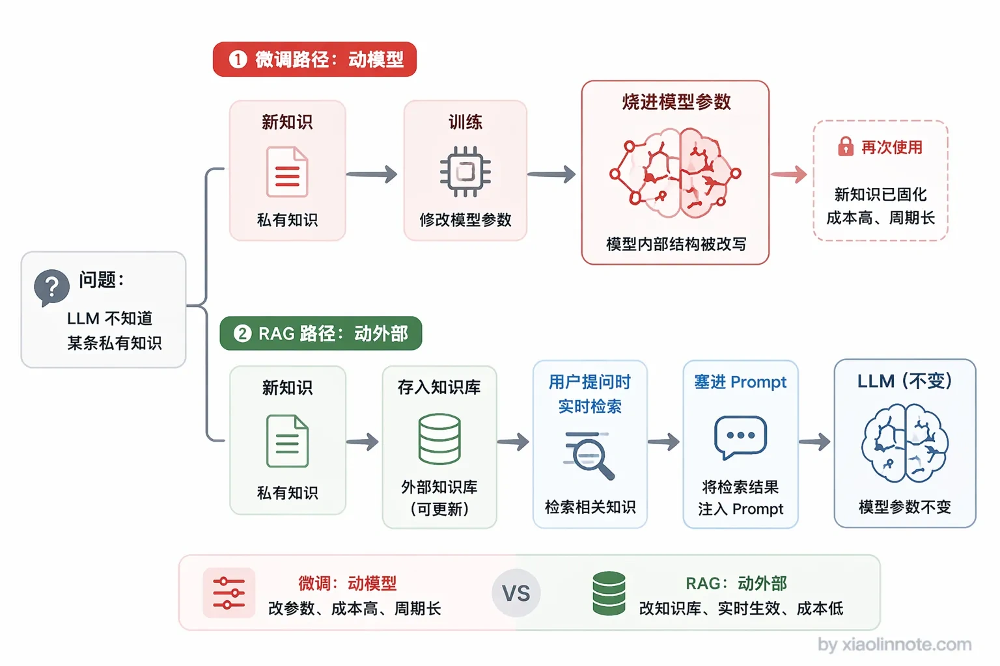
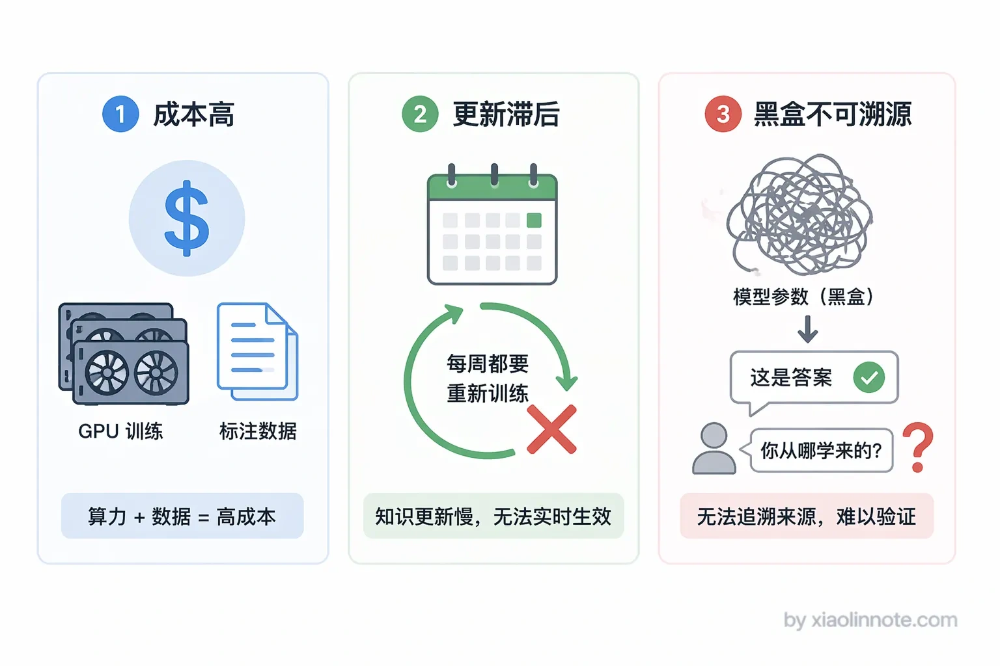
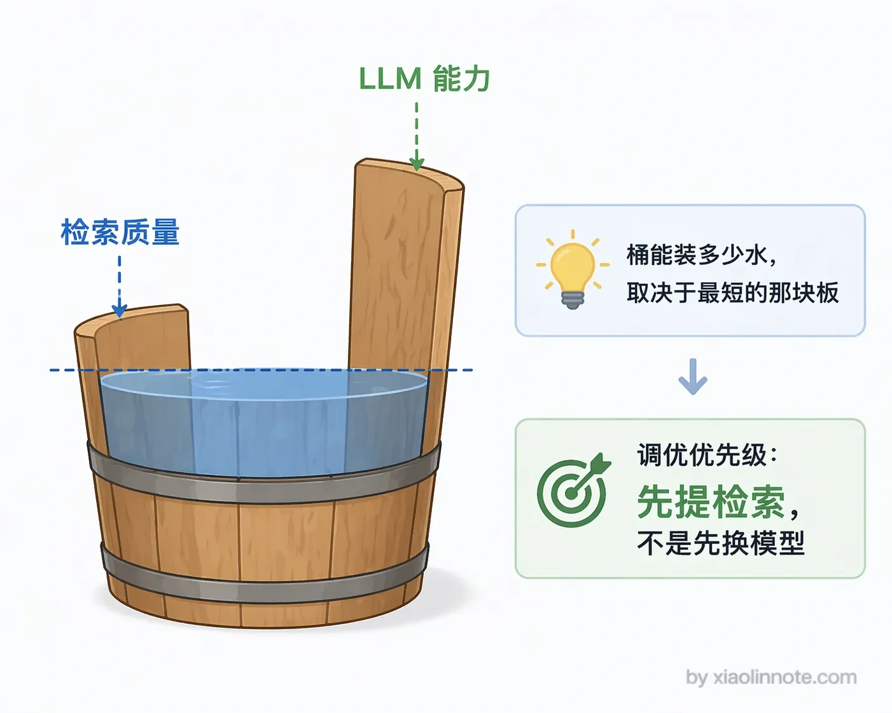
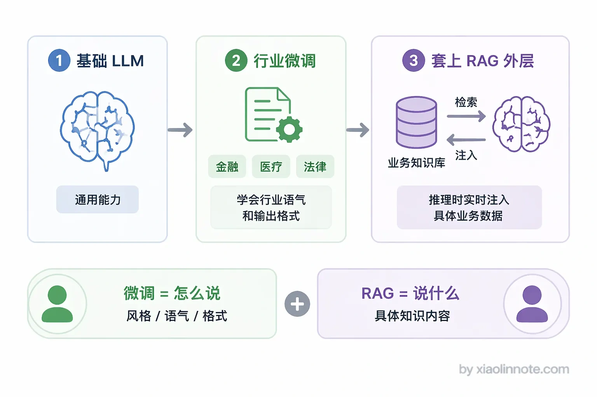

相比直接微调 LLM，RAG 解决了什么问题？微调和 RAG 各自的优劣势是什么？
👔面试官：RAG 和微调（Fine-tuning）有什么区别？各自适合什么场景？
🙋♂️我：微调就是拿自己的数据训练一下模型，RAG 也是拿自己的数据训练一下模型，只是方法不同。
👔面试官：……RAG 根本不训练模型，它是在推理时检索知识注入 prompt。你连这两个方案的本质区别都没搞清楚，一个改参数，一个不改参数，怎么能说「方法不同」呢？
🙋♂️我：好吧，那微调肯定更好吧？直接把知识写进模型，RAG 每次都要检索多麻烦。
👔面试官：更好？你公司的业务数据每周都在变，你每周都重新微调一遍？微调的成本你算过吗？而且微调出来的模型回答问题，你能追溯到是哪条知识在起作用吗？
🙋♂️我：呃……那我就选 RAG 呗，反正微调不好。
👔面试官：谁说微调不好了？你要让模型学会特定的输出格式、行业语气，微调才是正解。两个方案各有所长，还可以组合使用，你为什么非要二选一？
确实，这道题最容易犯的错就是二选一思维。下面我把微调和 RAG 的区别讲透，让你面试的时候能说清楚什么时候用哪个，什么时候两个一起用。
💡 简要回答
我的理解是这两个东西解决的不是同一层面的问题，不是谁替代谁的关系。
微调是把新知识直接烧进模型参数里，适合改变模型的行为风格或者培养深度的专业能力；RAG 是在推理的时候实时检索注入知识，适合知识需要频繁更新、或者需要有溯源的场景。
如果非要让我选一个，知识库类的问答系统我会首选 RAG，成本低而且可以随时更新。如果是要让模型学会特定的输出格式或者行业语气，那微调更合适。
实际上这两个方案也可以组合用，先微调再套 RAG。
📝 详细解析
要搞清楚这个问题，先得理解 LLM 知识的本质。LLM 的「知识」是训练时通过海量文本学到的，最终以权重参数的形式固化在模型里。你可以把它理解成「把知识烧进了 ROM」，训练完成之后，这些知识就刻在那里了，不会自己更新。这意味着训练完之后，模型就不再「成长」了，它不知道新发生的事，也不知道你的私有数据。
理解了「LLM 的知识是固化在参数里的」，就能理解为什么需要微调和 RAG 这两种方案了，它们本质上都是在解决同一个问题：怎么把模型训练时没学到的知识给它补上。只不过思路完全不同，一个是直接改参数，一个是不改参数、推理时现查。

微调（Fine-tuning）：把知识直接烧进模型
微调是直接改模型参数的方案。用你自己的数据继续训练，让模型把这些新知识「记」进去。微调的优势是效果非常彻底，模型会从内部改变，不管是专业词汇、输出格式、回答风格，都能深度定制。而且推理时不需要额外的检索步骤，响应延迟低。
听起来很美好对吧？但微调的代价也很明显。
首先是成本，需要准备标注数据、租用 GPU、跑训练，时间和金钱成本都不低。
其次是知识更新的问题，你可能会想：数据变了再微调一次不就行了？问题在于，业务数据每周都在变，你不可能每周都重新微调一次，每次微调都是几小时到几天的训练，成本根本扛不住。
第三是不透明，模型的回答来自参数里，你不知道它是从哪条知识推出来的，出错了也很难定位原因。很多人以为微调之后模型就「懂」了你的业务知识，其实模型只是记住了训练数据里的模式，它到底记住了什么、记错了什么，你根本无从得知。

RAG：不改参数，推理时现查知识
正是因为微调有上面这些痛点，RAG 才应运而生。RAG 绕开了这些问题，它不改模型参数，而是在推理时临时把知识塞进 prompt。知识库更新只是往向量库里加文档，不需要重新训练，加完就生效。回答可以附上来源 chunk，出错了马上知道是哪条知识有问题。成本也低得多，小团队用 OpenAI Embedding + Chroma 就能跑起来。
但 RAG 也并非完美。
首先是多了检索步骤，整体响应延迟会增加几百毫秒到一秒。
其次是「检索质量上限」问题，如果相关的 chunk 没被检索回来，LLM 再强也答不出来。你可能会觉得，换个更强的 LLM 不就好了？其实不是。
这里有个很重要的直觉：生成层（LLM）只是在复述和整理检索到的内容，它的上限被检索层死死卡住，你只能回答你检索到的知识，没检索到的东西，LLM 是变不出来的。所以 RAG 系统调优的主战场永远是检索这一层，不是换更强的 LLM。很多人一上来就想着换更贵的模型来提升效果，这往往是南辕北辙，真正该优化的是检索质量。

第三是对复杂推理能力提升有限，RAG 只是给模型提供了「参考资料」，但如果你需要模型对某个领域有更深的推理能力，光靠检索资料是不够的，还是得微调。
组合使用：微调解决「怎么说」，RAG 解决「说什么」
聊到这里你可能会问，既然各有优劣，那能不能两个都用？当然可以，而且实际工程里这恰恰是最常见的做法。一个典型的组合是：先对基础模型做一轮微调，让它学会输出格式、语气风格、行业术语；再用 RAG 来提供具体的知识内容。微调解决「怎么说」，RAG 解决「说什么」，各司其职。

把两种方案的核心差异对比起来，选型的时候更好做判断：
| 维度 | 微调（Fine-tuning） | RAG |
|---|---|---|
| 知识更新 | 需要重新训练，成本高 | 更新知识库即可，实时生效 |
| 推理延迟 | 低，无额外检索步骤 | 较高，多一次检索耗时 |
| 实现成本 | 高，需要 GPU 和标注数据 | 低，向量库 + Embedding 即可 |
| 答案可溯源 | 不支持，来自模型参数 | 支持，可追溯到具体 chunk |
| 适合场景 | 定制输出风格、深度专业能力 | 私有知识问答、动态更新数据 |
| 知识上限 | 受限于训练数据质量和规模 | 受限于检索质量和 context 长度 |
🎯 面试总结
回到开头那段面试，这道题最忌讳的就是「二选一」思维。
面试官问 RAG 和微调的区别，你要先说清本质：微调是改模型参数，RAG 是不改参数、推理时注入知识。然后各说优劣：微调擅长定制输出风格、培养深度专业能力，但成本高、更新慢、不可溯源；RAG 擅长知识频繁更新、答案可溯源的场景，但多了检索延迟、检索质量卡住上限。
最后一定要提到两者可以组合使用：微调解决「怎么说」，RAG 解决「说什么」。能把这个组合思路讲出来，面试官就知道你不只是背了定义，而是真正理解了怎么在工程里做选型。